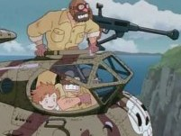
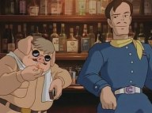
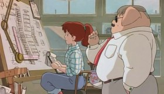
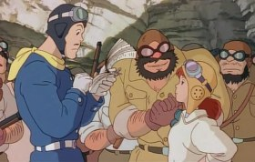
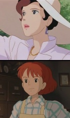
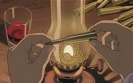

Porco Rosso -
Kurenai no Buta
1992 · Película · 1:33 hs
Dirección: Hayao Miyazaki
Guión: H. Miyazaki · Música: Joe Hisaishi

A Miyazaki siempre le gustó dibujar cerdos; y siempre amó las ciudades europeas -sobre todo Italia- y los artefactos voladores. Alrededor de 1990, surgió en Ghibli el proyecto de un cortometraje animado, liviano y humorístico, para una línea aérea japonesa. Miyazaki, designado director, pensó entonces en reutilizar el personaje y parte de la trama de un manga que había publicado (en acuarelas) poco tiempo tiempo atrás, («La era de los hidroaviones») protagonizado por un piloto con cabeza de cerdo (ya antes había dibujado otro manga sobre un maquinista de tanque de guerra, Hans, también cerduno). Promediando la realización, el estudio Ghibli analizaba las alternativas para su próxima película, y el productor Suzuki decidió promover a largometraje comercial el proyecto de Miyazaki. Este se opuso (a sus ojos el corto comenzado era inviable como película), pero al fin cedió. Debió entonces pensar una trama de mayor profundidad, y explorar el pasado de su personaje.
El resultado final fue muy satisfactorio. La componente fantástica se integra bien con el entorno, mayormente realista, y la «cuestión humana» del protagonista (sociedad y política, amistad y amor) funciona. Los pequeños pero eficaces toques de humor armonizan bien con los rasgos nostálgicos, sentimentales y costumbristas. En todo, y especialmente en la libertad creativa y la celebración de la belleza, es una obra muy representativa de Miyazaki, aunque no sea de las más conocidas.
Resumen
 En la primera parte se plantea la situación y los principales personajes. Porco Rosso (su verdadero nombre es Marco Pagot) vive oculto en su isla solitaria, y combate (a cambio de recompensa) a los piratas áereos que asolan el Adriático. Estos piratas, como vemos en el primer episodio en el que raptan a un montón de niñas, son los típicos malos simpáticos; hay varias bandas, tiene especial protagonismo el lider de una de ellas, llamada «Mama, aiuto!».
Todos los pilotos frecuentan el hotel Adriano, propiedad de la bella y popular Gina. Ella mantiene una larga amistad con Porco, y en estos momentos acaba de enviudar por tercera vez. 
Las bandas de piratas han decidido contratar los servicios de un famoso piloto norteamericano, Mr. Curtis. Con su ayuda, asaltan exitosamente un transantlántico, y envían un mensaje de desafío a Porco; pero él decide volar a Milán, para reparar su avión rojo.
La segunda parte (30 minutos) transcurre en Milán. Durante el viaje, Porco ha sido atacado por Curtis, y a duras penas llega a la compañía de aviones Piccolo en tren, con su avión destrozado. Su rediseño es encargado a Fio, la nieta del propietario, y la construcción a las mujeres de la familia, ya que los hombres han dejado la ciudad por la recesión.
 Porco se reúne a escondidas, en un cine, con Fierrali, su antiguo amigo que ahora milita en la fuerza aérea fascista; él le advierte que la policía secreta lo está buscando, y le aconseja que se una a ellos, pero Marco se niega.
Aunque el avión no ha sido probado, Porco decide despegar sin demora. Fio insiste en ir como copiloto; y su abuelo la apoya, puesto que depende del éxito de Porco para cobrar su trabajo y no quebrar. Escapan, por los pelos, y con la ayuda del mismo Fierrali, y se dirigen a la isla secreta de Porco.
Mientras tanto, Gina recibe la declaración de amor de Curtis, pero ella le cuenta de la apuesta que ha hecho consigo misma: «Cuando cierto piloto venga a visitarme a este jardín, de día, nos enamoraremos. Pero el tonto sólo viene al hotel de noche.» Entendemos que se refiere a Porco, que en ese momento pasa por sobre Gina y la saluda con unas acrobacias. 
Al llegar a la isla, Porco y Fio son sorprendidos por una emboscada de los piratas. Es Fio quien les hace frente, avergonzándolos por su propósito de «destrozar un avión tan bonito» y, sobre todo, por pedir ayuda a un piloto americano. La aparición del enamoradizo Curtis hace tomar un giro inesperado a la cuestión de honor: él acepta desafiar a Porco a un duelo, con la mano de Fio como premio; en caso de perder se compromete a saldar la deuda. En la víspera del duelo, Fio conoce de labios de Porco «su historia».
La última parte (20 minutos) abarca el duelo Porco-Curtis, que degenera en una pelea a los puños, mientras Gina acude para advertirles de la llegada de la policía aérea... y para ayudar a resolver el pleito.
Transcurre en Italia, algún lugar indeterminado del mar Adriático -y una parte en Milán. La época debería fijarse alrededor de 1929: indicios de recesión económica, ascenso del fascismo;  la historia que cuenta Porco -y la primera viudez de Gina- pueden datarse en 1917.
Además del protagonista (Marco-Porco), los personajes principales son las dos mujeres: Gina y Fio.
Gina, la dama elegante y desdichada, adorada por todos los aviadores -piratas incluidos; posee el hotel Adriano, que anima con su presencia y su canto. Ha enviudado tres veces, de otros tantos pilotos. Tiene una especie deuda de amor pendiente con Marco, su antiguo amigo de infancia.
Fio, la nieta del constructor de aviones; tiene diecisiete años, y ha vivido (no sabemos cuánto tiempo) en EEUU. Alegre, valerosa y algo inconciente, capaz de meterse a los piratas en el bolsillo y de intentar besar a Porco para borrar su maleficio. Es además una hábil ingeniera aeronáutica.
Otros personajes: Curtis, el piloto norteamericano, joven, enamoradizo y sediento de fama. Fierrali, antiguo amigo de Porco que se ha unido a la Fuerza Aérea fascista. Las bandas de piratas, en particular la «Mama aiuto», con su líder brutal y musculoso. El abuelo de Fio, propietario de la compañía constructora de aviones en Milán, con su abundante parentela femenina.
En consonancia con ese registro, hay bastante diálogo -para un guión de Miyazai- con réplicas agudas. La más celebrada es la respuesta de Porco a su amigo, cuando quiere convencerlo de unirse a la fuerza aérea estatal: «Mejor cerdo que fascista». Y, la que quizás más me gusta, su respuesta cuando Gina le suplica, por teléfono, que deje su vida riesgosa porque no quiere asistir a su funeral: «Un cerdo que no vuela... no es más que un cerdo».
Y el diálogo con Fio, tras el relato de su última batalla en la guerra, en la que fue
el único sobreviviente:
—Dios dijo que no era tu hora, ¿no es así?
—Ja... creo más bien que me dijo que desde entonces volaría siempre solo.
—¿Por qué dices eso? ¡Tú eres un buen tipo!
—No, niña, no. Los buenos son los que mueren.
También digna de mención es otra respuesta a Fio, cuando han acordado los términos del duelo con Curtis: «Confío en tí», le dice ella; y él: «Confiar... detesto esa palabra. Pero en tu boca suena diferente.»
Con el fascismo como régimen de fondo, y conociendo la filiación comunista de Miyazaki (y sus rasgos didácticos bastante explícitos en aspectos ecológicos y pacifistas) podría esperarse aquí una bajada de línea política. Pero hay poco de eso. El régimen fascista representa lo que Porco desprecia, de manera apropiada pero también algo accidental. Sus problemas con la sociedad corren más hondo.
Varios detalles, de todas formas, puede verse en esa clave anti-fascista: en particular, la canción que canta Gina en el hotel, «Les temps de cerisses», es desde el siglo XIX una especie de bandera de la izquierda francesa.
La ambigüedad del desenlace (aumentada por algunas traducciones, que omiten la frase final de Fio sobre la apuesta de Gina) ha motivado preguntas y discusiones... Sin indiscreciones, digamos que al parecer la ambigüedad es intencional: el final es abierto. Aunque el detalle que puede atisbarse en una de las tomas finales, al borde de la isla (de día), parece bastante significativo... Otros también estiman significativo el detalle de la numeración de los aviones, en la batalla que rememora Porco, y lo asociacian a los matrimonios de Gina...
Las escenas más memorables son, con toda probabilidad, dos flashbacks: 
En primer lugar, el recuerdo de Gina, cuando Porco sobrevuela su isla, y ella recuerda su infancia. El simple recurso musical de la modulación (un tono abajo, de Sol a Fa) es muy efectivo; y la escena, pasado y presente alternados, es muy bella.
No menos bella es toda la historia que relata Porco a Fio: la muerte de su amigo en la batalla -y la visión de los aviones que se «van al cielo»- y el origen su soledad.
También pueden mencionarse varios momentos humorísticos -la fotografía de los piratas con Fio, en particular; y la poesía del viaje a Milán; y las mujeres construyendo el avión; el despegue esforzado en los canales.

Durante el encuentro de Porco con su amigo en Milán -otra escena muy bien lograda- se proyecta en el cine un dibujo animado. Esta animación dentro de la animación, pero de estilo bien diferente, es entera creación de Miyazaki, y es su homenaje a la estética de los estudios Fleicher.
Porco Rosso no es muy fácil de conseguir por acá, fuera de fansubs y p2p... Hay un doblaje en español (casi inhallable, al menos con buena calidad), y también un doblaje inglés relativamente nuevo. Recomendamos subtítulos, en este caso.
Según un anuncio reciente (Junio 2009) Aurum ha adquirido de los derechos para su reedición en España, no se sabe si con nuevo doblaje.